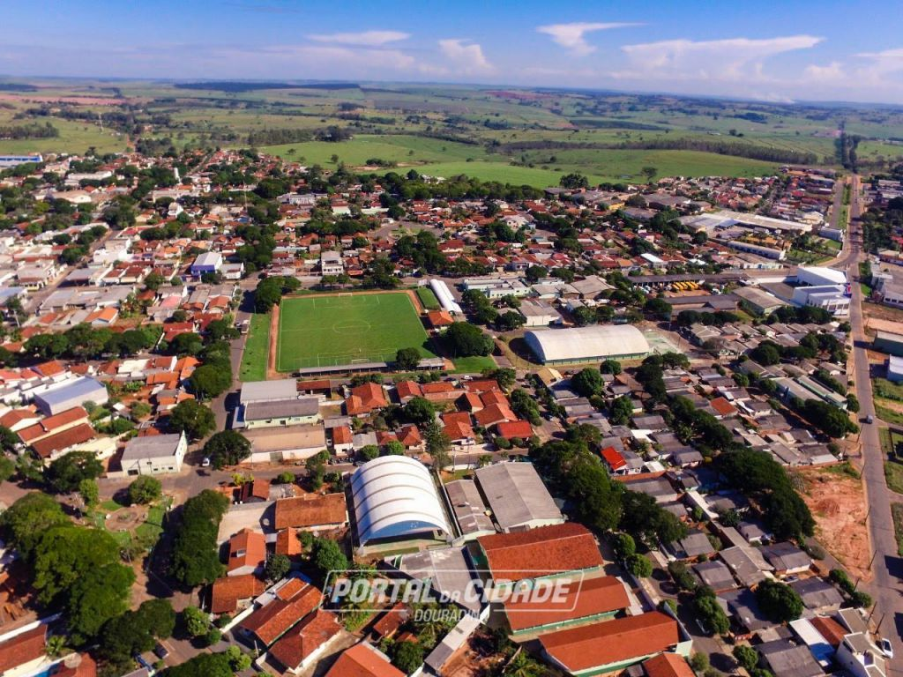
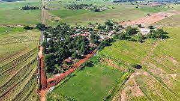

Unindo o campo e a cidade em uma grande celebração de cultura e sustentabilidade.
Bem-vindo ao evento Festejando a Conexão Campo e Cidade!
O evento Festejando a Conexão Campo e Cidade tem como objetivo promover o encontro entre a cultura rural e urbana. Uma oportunidade para refletir sobre como essas duas realidades podem se fortalecer e se complementar, celebrando as diversas influências que cada uma traz para a sociedade.


O que é o evento Conexão Campo e Cidade?
O evento é uma verdadeira celebração das culturas e tradições que conectam o campo e a cidade. Ao longo do evento, teremos apresentações culturais, debates sobre sustentabilidade e o papel da agricultura, além de exposições que mostram o que o campo pode oferecer para as cidades e vice-versa.
A importância da sustentabilidade
Em tempos de desafios ambientais globais, a sustentabilidade é um dos pilares essenciais para um futuro melhor. No evento Festejando a Conexão Campo e Cidade, buscamos destacar práticas sustentáveis tanto no campo quanto na cidade. A integração entre o urbano e o rural pode ser uma chave para o uso mais eficiente dos recursos naturais e a preservação de nosso planeta.
Acreditamos que a troca de conhecimentos e experiências entre esses dois mundos pode resultar em soluções inovadoras e mais conscientes para o nosso modo de vida, equilibrando progresso com respeito ao meio ambiente.
Programação do Evento
Dia 1: Abertura com palestra sobre a história das trocas culturais entre campo e cidade.
Dia 2: Exposição de produtos locais e apresentações musicais com artistas regionais.
Dia 3: Painel sobre sustentabilidade no campo e cidade, seguido de uma feira de agricultura orgânica.
Dia 4: Debate sobre as práticas de urbanismo sustentável, com participação de especialistas.
Depoimentos de Participantes
"O evento foi uma grande oportunidade de aprendizado e troca de ideias. A conexão entre o campo e a cidade precisa ser mais explorada e celebrada!" - Maria Silva, participante.
"Adorei conhecer as iniciativas sustentáveis que estão surgindo no campo. Isso abre um novo horizonte para quem mora nas grandes cidades!" - João Pereira, visitante.
A História do Evento
O evento Festejando a Conexão Campo e Cidade nasceu da necessidade de unir as culturas que, embora distantes fisicamente, são profundamente interligadas. Desde sua primeira edição, o evento tem como objetivo destacar as contribuições únicas de ambos os mundos, promovendo um ambiente de aprendizado mútuo.
Em um cenário onde as grandes cidades ganham cada vez mais destaque, é fundamental resgatar a importância das tradições rurais e sua relevância para o equilíbrio social e ambiental. A história do evento é marcada por parcerias com comunidades rurais, organizações ambientais e entidades urbanas, buscando sempre uma troca rica e produtiva.
Ações Sustentáveis no Evento
Durante o evento, diversas ações sustentáveis são promovidas, como a utilização de materiais recicláveis, incentivo ao consumo consciente e apoio a produtores locais que seguem práticas agrícolas sustentáveis. Além disso, estamos comprometidos em minimizar o impacto ambiental do evento, buscando reduzir o uso de plásticos e adotando alternativas ecológicas em todos os aspectos da organização.
Esse compromisso reflete a nossa visão de promover a sustentabilidade em todas as áreas, desde a alimentação até o transporte dos participantes. A ideia é que o evento seja um exemplo prático de como a união entre o urbano e o rural pode ser sinônimo de respeito ao meio ambiente.
Nossos Parceiros
Este evento não seria possível sem a colaboração de nossos parceiros. Agradecemos a todas as entidades, empresas e comunidades que se uniram a nós para tornar este evento uma realidade. Juntos, estamos criando um futuro mais sustentável e harmonioso entre campo e cidade.
Alguns de nossos principais parceiros incluem organizações ambientais, cooperativas de agricultores e empresas que compartilham nossa visão de promover práticas sustentáveis e de colaboração entre as diferentes realidades sociais e culturais.
Assista ao nosso vídeo
Conheça melhor o evento Festejando a Conexão Campo e Cidade assistindo ao vídeo abaixo: